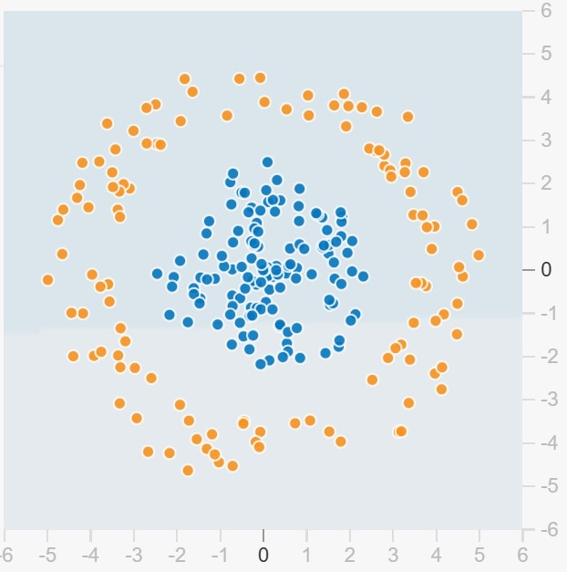
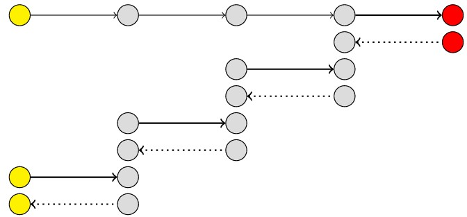

Efficient AI
Блок 2. Нейронные сети. Проект


Где мы?
- Вводная
- Блок 1
- Блок 2
- 1 мая
- 9 мая
- Блок 3
- Экзамен
Содержание
- Квиз
- Разбор библиотек для инференса
- Рекомендации при разработке
- Обзор Inference Engine
Квиз
Алгоритмическая сложность алгоритма Штрассена
- $O(n^3)$
- $O(n^{2.81})$
- $O(n^{2.38})$
- $O(n^2)$
Можно ли хранить веса модели Llama-3 на стеке?
- Да
- Да, но только квантованные
- Нет
Можно ли разделить данные множества линейной моделью?

$x_1=r$, $x_2=\phi$
🤡
Зачем нужен DL?
Можно ли обойтись без него?
Есть два альтернативных подхода — forward и reverse mode.

Статья — A Review of Automatic Differentiation and its Efficient Implementation
\[ f(y, \sigma, \mu) = - \frac{1}{2} \left( \frac{y - \mu}{\sigma} \right)^2 - \log (\sigma) - \frac{1}{2} \log (2\pi) \]
\[J_{ij} = \frac{\partial f_i}{\partial x_j}\]
Для экономии памяти используют чекпойнты

Статья — A Review of Automatic Differentiation and its Efficient Implementation
Оптимизации нейросетей
По каким критериям оценивать качество оптимизации нейросети?
- Время различных стадий работы нейросети (prefill, decoding,...)
- Потребление памяти (пиковое, среднее, ...)
- Качество модели (бенчмарки)
Что ценится?
- Простота реализации (training-free, ...)
- Универсальность (работает для любых моделей, любого бэкенда)
Разбор библиотек для инференса
Eigen
Eigen — библиотека линейной алгебры для C++ с открытым исходным кодом
Динамический vs статический полиморфизм
- Полиморфизм — концепция "один интерфейс — множество реализаций"
- Динамический реализуется через наследование и виртуальные методы, работает с помощью виртуальной таблицы
- Статический реализуется через шаблоны
Особенности шаблонов в C++
- Тьюринг полные 😱
- Перенос части вычислений в compile time 🚀
- Дополнительные проверки во время компиляции 🔎
- Никто не поймет ваш код 💀
Статья —
"игра в
жизнь" на
шаблонах
Рекомендации
- Форматтеры и анализаторы кода (clang-format, clang-tidy)
- Система сборки (CMake)
- Тестирование (unit-тесты, интеграционные тесты, покрытие тестами)
- CI/CD (build, test, deploy)
Примеры успешных библиотек
Практика
Проект
- Сделать форк репозитория
- Добавить фичу (2 части: функциональный код + оптимизация)
- Убедиться в корректности работы
- Замерить скорость
- Сделать пул-реквест
- Альтернативно можно добавлять фичи другого типа (рефакторинг и т.д.)
- Пул-реквест лучше сделать заранее после написания функционального кода